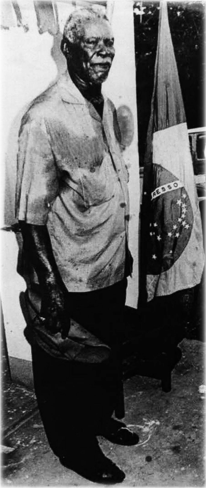
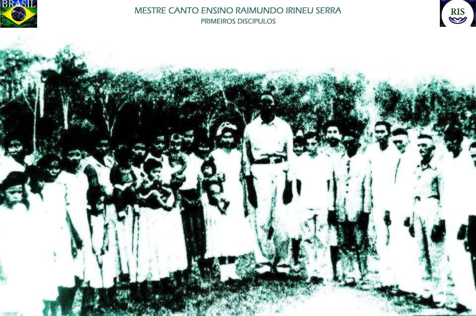

Vida e Obra
RAIMUNDO IRINEU SERRA · MESTRE CANTO ENSINO

Um legado transmitido pelo canto
Esta página reúne, progressivamente, a trajetória de Raimundo Irineu Serra e o legado de seus ensinamentos por meio dos hinos. O projeto pretende apresentar fontes documentais, imagens, depoimentos e referências musicais, respeitando a procedência de cada material.
A organização separa os registros históricos do trabalho editorial e das homenagens artísticas, para que o visitante identifique claramente cada natureza de conteúdo.
Vida e Obra · registros da edição consultada
Primeiros marcos históricos registrados no documento anexo, apresentados como relatos desta fonte e não como reconstrução histórica definitiva.
- 1890 · NascimentoO relato situa o nascimento de Raimundo Irineu Serra em 15 de dezembro, em São Vicente de Férrer, Maranhão. Fonte: PDF, p. 5.
- 1912 · Deslocamento ao NorteA narrativa descreve a passagem por Belém e Manaus e a chegada à região do Acre, com referências aos irmãos Costa. Fonte: PDF, pp. 7–9.
- 1931–1935 · Formação dos trabalhos e primeiros hinosOs relatos situam a organização da doutrina em Rio Branco e citam Lua Branca, Tuperci e Ripi; descrevem um hinário realizado em junho de 1935. Fonte: PDF, pp. 15–23.
- 1936 · Bailado e fardamentoA edição descreve a introdução de passos de marcha, valsa e mazurca, os ensaios e o primeiro fardamento. Fonte: PDF, pp. 25–27.
- 1945 · Alto da Santa CruzA narrativa registra a mudança do Mestre e a continuidade dos trabalhos na nova localidade. Fonte: PDF, pp. 33–34.
Coral, música e organização dos trabalhos
O texto biográfico registra a formação de fileiras nas alas masculina e feminina, citando participantes dos primeiros trabalhos (PDF, pp. 20–21). Também descreve a introdução do bailado com os ritmos marcha, valsa e mazurca (PDF, p. 26).
Estes registros ajudam a documentar a relação entre canto, formação coletiva e acompanhamento dos hinos. A disposição atual do coral em estrela de seis pontas foi informada pelo projeto e será documentada separadamente, sem atribuí-la automaticamente a esta edição histórica.
Acervo de referência · edição recebida
O PDF recebido reúne quatro partes: vida do Mestre, O Cruzeiro, A Santa Missa e Diversões. A seção de hinos começa no documento após a biografia; há trechos paralelos em inglês e português. As partituras e eventuais marcas de repetição exigem verificação visual página a página antes de alimentar o leitor contínuo.
Na edição, Lua Branca é identificada como valsa (p. 85), enquanto Tuperci e Ripi apresentam a anotação (3x) (pp. 89 e 91). O leitor continuará sem índice; essas informações são apenas apoio documental.
Primeiros discípulos

Retratos e documentos
O acervo reunirá retratos originais, referências de publicação e notas sobre variantes das imagens, sem modificar os registros históricos.
Arquivos de áudio, vídeo, partituras e PDFs poderão ser associados às seções correspondentes em elos futuros.